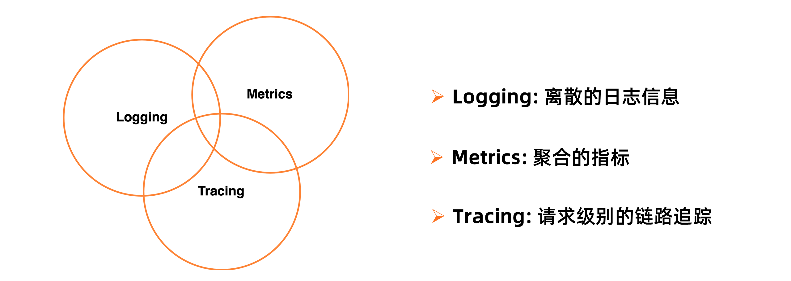
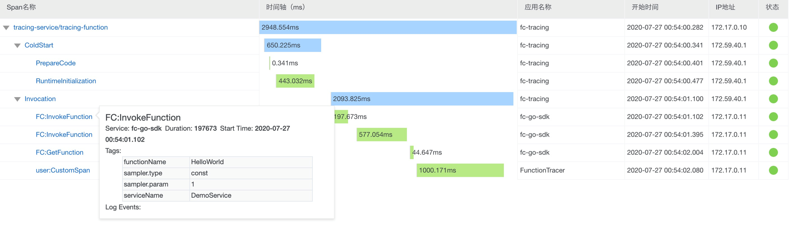

- 01 架构的演进.md
- 02 Serverless 的价值.md
- 03 常见 Serverless 架构模式.md
- 04 Serverless 技术选型.md
- 05 函数计算简介.md
- 06 函数计算是如何工作的？.md
- 07 函数粘合云服务提供端到端解决方案.md
- 08 函数计算的开发与配置.md
- 09 函数的调试与部署.md
- 10 自动化 CI&CD 与灰度发布.md
- 11 函数计算的可观测性.md
- 12 典型案例 1：函数计算在音视频场景实践.md
- 13 典型案例 3：十分钟搭建弹性可扩展的 Web API.md
- 14 Serverless Kubernetes 容器服务介绍.md
- 15 Serverless Kubernetes 应用部署及扩缩容.md
- 16 使用 Spot 低成本运行 Job 任务.md
- 17 低成本运行 Spark 数据计算.md
- 18 GPU 机器学习开箱即用.md
- 19 基于 Knative 低成本部署在线应用，灵活自动伸缩.md
- 20 快速构建 JenkinsGitlab 持续集成环境.md
- 21 在线应用的 Serverless 实践.md
- 22 通过 IDEMaven 部署 Serverless 应用实践.md
- 23 企业级 CICD 工具部署 Serverless 应用的落地实践.md
- 24 Serverless 应用如何管理日志&持久化数据.md
- 25 Serverless 应用引擎产品的流量负载均衡和路由策略配置实践.md
- 26 Spring CloudDubbo 应用无缝迁移到 Serverless 架构.md
- 27 SAE 应用分批发布与无损下线的最佳实践.md
- 28 如何通过压测工具+ SAE 弹性能力轻松应对大促.md
- 29 SAE 极致应用部署效率.md
11 函数计算的可观测性
概述
可观测性是什么呢？维基百科中这样说：可观测性是通过外部表现判断系统内部状态的衡量方式。
在应用开发中，可观测性帮助我们判断系统内部的健康状况。在系统出现问题时，帮助我们定位问题、排查问题、分析问题；在系统平稳运行时，帮助我们评估风险，预测可能出现的问题。评估风险类似于天气预报，预测到明天下雨，那出门就要带伞。在函数计算的应用开发中，如果观察到函数的并发度持续升高，很可能是业务推广团队的努力工作导致业务规模迅速扩张，为了避免达到并发度限制触发流控，开发者就需要提前提升并发度。

可观测性包括三个方面：Logging、Metrics、Tracing
- Logging 是日志，日志记录了函数运行中的关键信息，这些信息是离散且具体的，结合错误日志与函数代码可以迅速定位问题。
- Metrics 是指标，是聚合的数据，通常以图表的形式展现。图表中的 tps、错误率等核心指标，可以反映函数的运行情况与健康状况。
- Tracing 是链路追踪，是请求级别的追踪，在分布式系统中可以看到请求在各个模块的延时、分析性能瓶颈。
函数计算中的 Logging/Metrics/Tracing
1. 日志
在函数计算中如何查看函数日志呢？在传统服务器开发方式中，可以将日志记录到磁盘中的某个文件中，再通过日志收集工具收集文件的内容；而在函数计算中，开发者不需要维护服务器了，那如何收集代码里打印的日志呢？
1）配置日志
函数计算与日志服务无缝集成，可以将函数日志记录到开发者提供的日志仓库（Logstore）中。日志是服务配置中的一项，为服务配置 LogProject 和 Logstore，同一服务下所有函数通过 stdout 打印的日志，都会收集到对应的 Logstore 中。
2）记录日志
那日志怎么打呢？在代码中直接通过 console.log/print 打印的日志可以收集到吗？答案是可以的。各个开发语言提供的打印日志的库都将日志打印到 stdout，比如 node.js 的 console.log()、python 的 print()、golang 的 fmt.Println() 等。函数计算收集所有打印到 stdout 的日志并将其上传到 Logstore 中。
函数计算的调用是请求维度的，每次调用对应一个请求，也就对应一个 requestID。当请求量很大时，会有海量日志，如何区分哪些日志属于哪个请求呢？这就需要把 requestID 一起记录到日志中。函数计算提供内置的日志语句，打印的每条日志前都会带上请求 ID，方便日志的筛选。
3）查看日志
当函数日志被收集到日志服务的 Logstore 中，可以登录日志服务控制台查看日志。
同时，函数计算控制台也集成了日志服务，可以在函数计算控制台上查看日志。函数计算控制台有两种查询方式：
- 简单查询：简单查询中列出每个 requestID 对应的日志，可以通过 requestID 对日志进行筛选；
- 高级查询：高级查询嵌入了日志服务，可以通过 SQL 语句进行查询。
点击链接观看 Demo 演示：https://developer.aliyun.com/lesson202418996
2. 指标
查看指标的方式：
- 函数详情查看监控指标：FC 提供丰富的系统指标，这些指标可以不用任何配置，就可以在函数计算控制台查看。
- 配置日志大盘：日志大盘不仅可以看到函数计算提供的监控指标，而且可以与开发者日志关联，生成自定义的监控指标。
3. 链路追踪

（请求在各个链路的延时瀑布图）链路追踪是分布式系统排查问题的重要一环，链路追踪可以分析分布式系统中请求在各个链路的时延。有以下几种情况：
- 函数计算作为整个链路中的一环，可以看到请求在函数计算上的时延，时延包括系统启动的时间和请求真正的执行时间，帮助用户分析性能瓶颈。
- 函数计算中调用 FC SDK，可以默认看到 SDK API 的调用时延。
- 开发者在函数代码中访问数据库等产品，可以手动在函数中埋点分析这段时延。
问题排查
函数计算提供了很多可观测性相关的功能，那究竟怎样定位问题呢？以几个场景为例。
场景一：新版本发布后，函数错误率升高
首先发布版本后要观察函数各项指标，一旦错误率升高要立即回滚避免故障，查看函数日志定位错误原因，修复问题再次上线。
场景二：函数性能差，总是执行时间很长，甚至超时
开启 tracing 功能，在函数内部可能耗时的地方进行埋点，查看请求的瀑布图，定位执行时间长的原因，修复问题。
场景三：业务量迅速扩张，并发度即将到达并发度限制
通过 metrics 查看当前并发度，观察到并发度持续上升时，及时联系函数计算开发同学，提升并发度。
课程推荐
为了更多开发者能够享受到 Serverless 带来的红利，这一次，我们集结了 10+ 位阿里巴巴 Serverless 领域技术专家，打造出最适合开发者入门的 Serverless 公开课，让你即学即用，轻松拥抱云计算的新范式——Serverless。
© 2019 - 2023 Liangliang Lee. Powered by gin and hexo-theme-book.